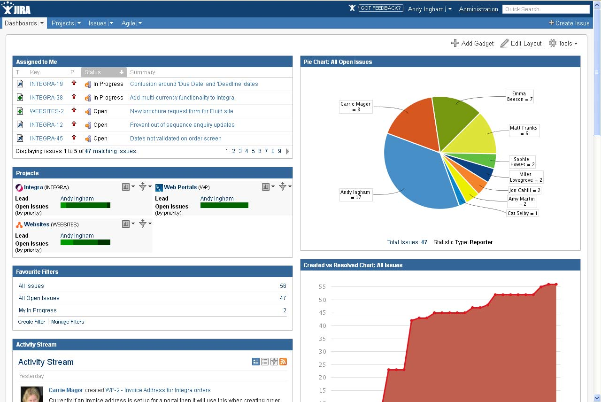

Pilihlah dan identifikasi beberapa website ataupun web app (lebih dari satu) yang kamu sukai. Kalau bisa selain social media yang populer. |
|
Jawaban yang langsung terpikir oleh saya setelah melihat pertanyaan ini adalah JIRA. |
Mengapa website tersebut kamu pilih? |
| Kenapa ? Sejauh ini yang saya rasakan betul manfaatnya adalah fungsi bug trackingnya yang sangat bagus. Apalagi kalau sudah masuk issue-issue production, benar-benar bisa ditrack mana issue yang masih open, on progress, dan close. Pengaturan lempar-lemparan issue nya juga bagus, bisa dioper dari developer yang fixing issuenya, lalu ke tester, kalau lolos lalu lempar lagi ke user, kalau lolos baru dideploy dan di closed issuenya. |
Hal apa yang disajikan atau dijual? Apakah ada masalah yang diselesaikan oleh website tersebut? |
| Issue Management adalah hal yang paling dijual. Mungkin kelihatan sepele cuma me manage bug-bug, tapi kalau sudah berbicara di skala aplikasi besar , misal ada lebih dari 5000 test scripts, kalau tidak dipilah dan di manage dengan baik tentu bug fixing quality tidak akan bisa dijaga dengan baik. |
Bagian mana pada website tersebut yang paling menarik dan paling penting? |
| Fitur yang mirip dengan repositori di github, lalu di masing-masing project bisa di manage dikelompokkan issue-issue mana yang masuk ke project tertentu. Pengaturan member dari masing-masing project juga penting, biar tau kalau mau route issue larinya ke tim mana dan spesifik ke siapa orangnya. |
Deskripsikan website tersebut secara visual, dengan minimal 5 sifat. (elegan, sederhana, cantik, minimal, gelap, terang, dll) |
| Hmm sifat ya. Yang terpikir adalah : Powerfull , Simple, Easy to Learn, Efficient, Fast |
Deskripsikan sifat konten, fokus, atau tujuan website tersebut, dengan minimal 5 sifat. (teoritis, seru, lucu, serius, praktis) |
| Sama dengan jawaban diatas, Powerfull , Simple, Easy to Learn, Efficient, Fast |
Seberapa mudah kamu dapat menemukan hal yang kamu cari dari halaman utama? Bagaimana jika dari halaman lain? |
| Dibawah ini adalah contoh dashboardnya. Yang biasa saya langsung lihat adalah pada bagian Assigned to Me karena disinilah list kerjaan saya tiap hari harus benerin issue apa saja. Jadi sudah tidak perlu link ke halaman lain selama apa yang paling utama saya cari langsung ada disana. Paling happy kalau bagian situ sudah kosong, artinya kerjaan habis, waktunya santai :D haha  |
Apa yang kamu rasakan setelah berada di website tersebut? (senang, bosan, pintar, tenang, khawatir, buang waktu, terbantu) |
| Jawabannya cuma dua, yaitu senang kalau issue sudah habis, dan berusaha tenang kalau dapat issue. |
Jika website tersebut menjual sesuatu, apakah kamu pernah membeli sesuatu yang di jual di sana? Mengapa dan mengapa tidak? |
| Kalau issuenya dijual tentu saya happy sekali, gratis juga gpp haha. Tapi saya rasa di web itu sepertinya tidak akan pernah ada sesuatu yang dijual. Kecuali ya, tiba-tiba ada fitur auto fix issue nah pasti laku sekali :D |